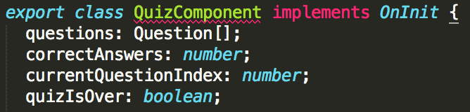
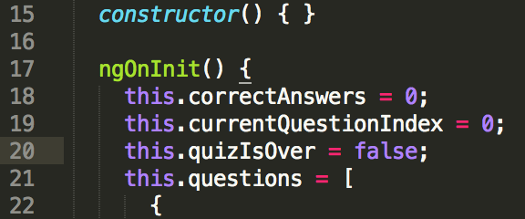
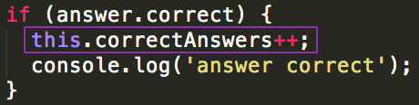
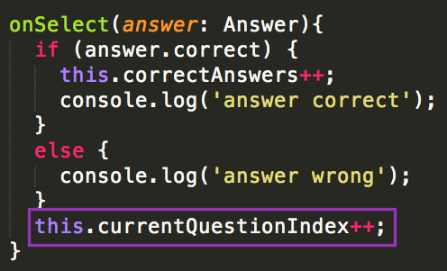
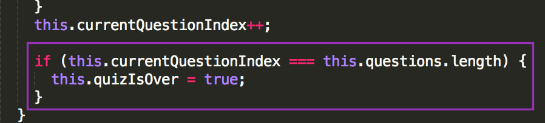
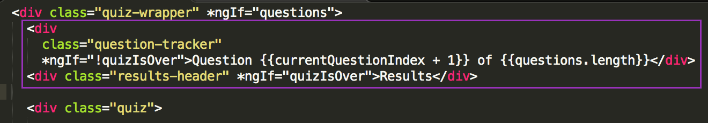
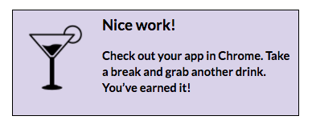

Part 5: Tally Correct Answers & Show Results
Now you have questions and answers to create a quiz, but at the end of the quiz, the user won’t know how many they answered correctly. Add a counter that keeps track of the correct answers throughout a quiz and displays the results at the end!
Copy the code below:
<div class="results" *ngIf="quizIsOver"> <div class="result-message"> You answered {{correctAnswers}} out of {{questions.length}} questions correctly. </div> <div class="score">That's {{ correctAnswers / questions.length * 100 }}%</div> <div class="result-action">Grab a cocktail & celebrate!</div> </div>In Atom, paste the code into your src/app/quiz/quiz.component.html file before the final closing
</div>HTML tag.
What does this code do?
- The
divHTML element with theclass="results"only shows if thequizIsOver - The
divHTML element with theclass="result-message"tells the user how manycorrectAnswersthey had out of the total number of questions - The
divHTML element with theclass="score"calculates and displays the percentage of correct answers - The
divHTML element with theclass="result-action"displays a fun message quizIsOverandcorrectAnswersare highlighted because you still need to define those methods in the quiz.component.ts file.
- The
In Atom, open the src/app/quiz/quiz.component.ts file.
Below the
questions: Question[];code, add 3 new variables and their data types. Type:correctAnswers: number;Press enter to write the next variable on the next line.
Type:
currentQuestionIndex: number;Repeat that process to add the final variable:
quizIsOver: boolean;
Next, in Atom, in the same src/app/quiz/quiz.component.ts file, find the
ngOnInitfunction. Before thethis.questionscode, set default values for these 3 new variables that you just created. Place your cursor after the opening curly brace of thengOnInit() {line and press enter.Type:
this.correctAnswers = 0;then press enter to move to the next line.Type:
this.currentQuestionIndex = 0;then press enter to move to the next line.Type:
this.quizIsOver = false;
Why these defaults?
correctAnswersandcurrentQuestionIndexboth start at 0 because the quiz hasn't started yet.quizIsOverstarts as false because the quiz can't be over if it hasn't started yet.
Increment your
correctAnswersvariable, every time an answer is correct.Find the
onSelectmethod towards the bottom of the file. Place your cursor at the end of theif (answer.correct) {line of code and press enter. You're now in the body of the if statement. Type:this.correctAnswers++;
That line of code will update the value of the
correctAnswersvariable by one each time that line of code is hit (when theansweriscorrect).++is a common way of incrementing a number by one in many programming languages!
Next, increment the
currentQuestionIndexvariable by one, every time an answer is selected (correct or not).The
ifstatement has anelseclause as well. Place your cursor after the closing}for theelseclause and press return.Type:
this.currentQuestionIndex++;
Press return to move to the next line and type:
if (this.currentQuestionIndex === this.questions.length) {Notice Atom automatically adds the closing curly brace
}for you.Press return and set the
quizIsOvervariable to the valuetruein the if statement body. Type:this.quizIsOver = true;
When the
currentQuestionIndexvalue is the same as the number of questions in the quiz (questions.lengthvalue),quizIsOveris set to true.Save your src/app/quiz/quiz.component.ts file.
Right now, you see all the quiz questions at once. Even when the results display, the questions and answers are still visible. Add an
*ngIfattribute, so you only see 1 question at a time.Open the src/app/quiz/quiz.component.html file. In the
<div class="q-and-a">HTML element, add the attribute:*ngIf="currentQuestionIndex === i"
BONUS: Add a tracker to the top of the quiz that tells the user which question they’re viewing.
- In the src/app/quiz/quiz.component.html file, before the
<div class="quiz">HTML element but after the opening<div class="quiz-wrapper">HTML element, paste the following code:
<div class="question-tracker" *ngIf="!quizIsOver"> Question {{currentQuestionIndex + 1}} of {{questions.length}} </div> <div class="results-header" *ngIf="quizIsOver"> Results </div>
Challenge: Can you explain to your neighbor what this is doing?
- Save the src/app/quiz/quiz.component.html file.
- In the src/app/quiz/quiz.component.html file, before the
